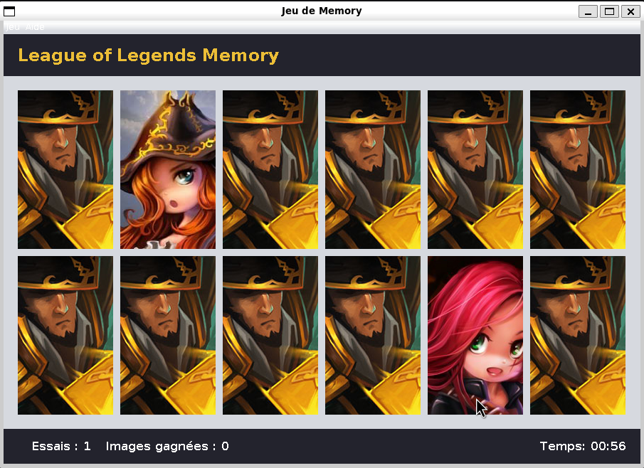
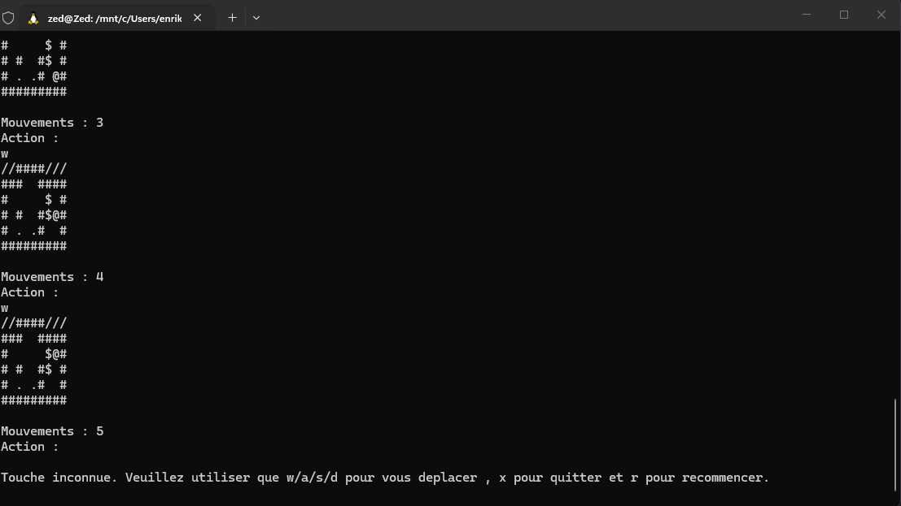
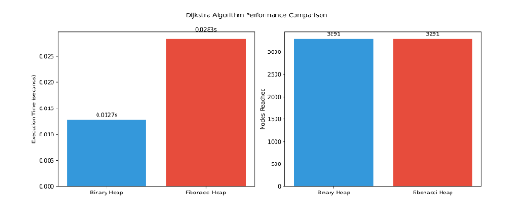

ENRIK PASHAJ — ÉTUDIANT & DÉVELOPPEUR.
Étudiant en 3ème année de Licence Informatique à l'Université d'Artois. Je cherche un stage pour construire des applications concrètes, rigoureuses et apprendre auprès d'équipes expérimentées.
Projets Académiques & Personnels
Memory Game
Un jeu de paires avec les visuels de League of Legends, écrit en Java avec Swing. Il suit le modèle MVC, compte les essais et le temps, gère les clics sur les cartes et les actions du menu, et se lance depuis un fichier .jar exécutable.

Sokoban Engine
Le classique jeu de caisses, jouable directement dans le terminal : w, a, s et d pour se déplacer, x pour quitter, r pour recommencer. Moteur développé en Java : chargement des niveaux, déplacements et détection des collisions.

Plus court chemin
Un rapport de SAE en Python, rédigé en LaTeX. Comparaison de Dijkstra (tas binaire et tas de Fibonacci) avec Bellman-Ford sur les données réelles du réseau de bus Ilévia (Lille).

Domaines d'Expertise
- Java (POO, héritage, collections)
- Python (Algorithmique & analyse)
- C (Structures de données)
- JavaScript
- HTML5 & CSS3
- React
- Node.js
- Interfaces Responsives
- PostgreSQL
- Modélisation MCD / MLD
- Requêtes SQL & Jointures
- FileZilla
- UNIX / Linux Shell (Scripting, Processus)
- Docker
- Git & GitHub
- Excel & LibreOffice Calc
Parcours sur le Terrain
- Encaissement, réapprovisionnement du stock et contrôle des factures fournisseur.
- Gestion du stock : réception, inventaire et contrôle des DLC/DLUO.
- Formation des nouveaux équipiers et gestion des commandes de marchandises.
- Secteur boulangerie : préparation, cuisson et mise en rayon.
- Responsable colis Mondial Relay / Colis Prive / GLS : Inventaire, Approvision du stock, Distribution.
- Livraisons de commandes en autonomie, gestion des trajets et respect des délais.
- Promu Capitaine d'équipe (mars 2022) : accueil et formation des nouveaux livreurs.
- Animateur d'ateliers internes pour le dépannage et la maintenance de vélos.
Formation & Certifications
Faculté des Sciences Jean Perrin. Modules clés :
- UNIX : Programmation shell, gestion de fichiers et de processus.
- POO (Java) : Hiérarchies de classes, héritage, classes abstraites, collections typées.
- Bases de données : PostgreSQL, MCD, MLD, requêtes SQL.
- Programmation Web : HTML, CSS, JavaScript, React.
- Algorithmique : Structures de données et complexité en Python et C.
À Propos & Contact
Discipline, Endurance & Lecture
"Je nage, je pédale, je cours et je lis. Passionné par les classiques et l'histoire (récemment marqué par Le Siège de Malte suite à ma visite de l'île), grand fan de Tom Clancy (mon préféré étant À la poursuite d'Octobre Rouge), je viens de terminer Le Seigneur des Anneaux : La Communauté de l'Anneau et j'ai hâte de lire la suite. Hermann Hesse et sa vision de l'existentialisme ont aussi profondément changé ma perspective, Siddhartha et Le Loup des steppes restant mes favoris de tous les temps."
[ PROFIL GOODREADS ↗ ]• Italien : B2 (compréhension), B1 (écrit), B2 (oral)
• Espagnol : B2 (compréhension), A2 (écrit), B1 (oral)
• Permis B
Prise de contact
Basé près de Lille. N'hésitez pas à me contacter par email pour toute opportunité de stage ou de projet.